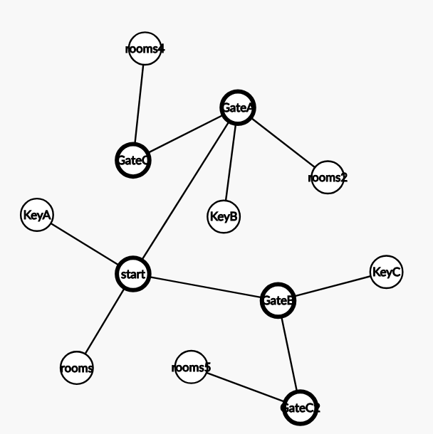

FPE:FaB - Map Structure
So my first question I asked myself while making the game is how do I make the map auto generate? It requires some sort of pattern, that will serve as the heart of the generator. That's why I reached to the idea of the graph structure.
Here I present you the current "canon" base of every school you will visit in the base game:

As you can see, there are 5 sections, where 4 are unlockable only by a key, and the act of unlocking new path will be also the one, where the player will meet with difficulty spike due to making new killer to appear on the map.
My next point, was to make the map as customizable as possible. At this point, I am not sure how to make mod support, but I may know how to make my rules as editable as possible. And that's how I started trying to make customizable graph reader from file.
It took me 2 weeks until I just took everything I did already, and threw into the trash can. Simple text file couldn't match the readability of existing file formats, and vice versa when it comes to ease of use. I even remember making some custom file extensions like ".nmg" and ".mg".
That was until I recalled the memory of when I needed to learn how to setup the IP of a Linux Terminal Machine in IT class in School. Then I finally found. My desire to make creation making easy and readable at the same time couldn't come true until I found that one particular serialization format.
Behold, the ever great ".yaml" format
sections:
- id: 0
src: -1
size: 40
rooms: 10
min_dist: 18
- id: 1
src: 0
size: 30
rooms: 6
min_dist: 16
- id: 1
src: 0
size: 30
rooms: 6
min_dist: 16
- id: 2
src: 0
size: 30
rooms: 5
min_dist: 16
- id: 2
src: 1
size: 30
rooms: 5
min_dist: 16
Absolutely clean and easy to read.
As of now, this will make user able to customize their map generator as they want. Even letting them make 100 sections with nothing but one room each. But the part about how I was going to implement it is in the next article.